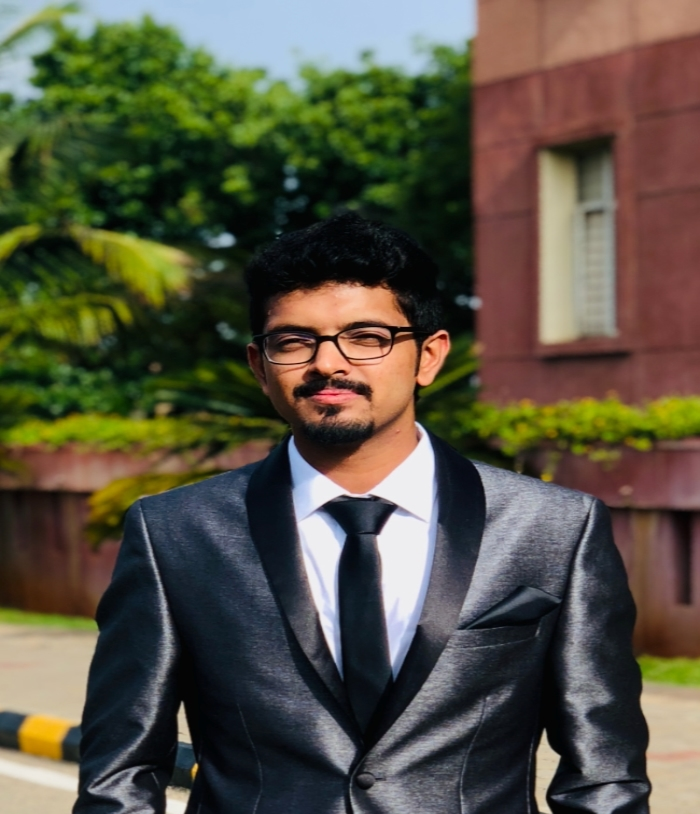

I’m Druva. My Friend’s call me Dhruv. On the internet I am druvamurali. I was born on June 28th, 1995, in Bangalore, India.

Druva at his graduation
Education
I am an aspiring Data Analyst. My passion for technology and knowledge and determination to turn
knowledge into action has led me to join Illinois Institute of Technology,Chicago where I am
currently pursuing my master’s degree in information technology and Management specialising in Data
Analytics. I strongly believe striving for excellence is progress. This has been my guiding motto through all his years of learning.
Extracurricular Activities
Volunteered in the international meet of ASEAN Chamber of Commerce and Industry organised by FKCCI.
A Rotarian who has volunteered in events served to purpose charity through Rotary Club, Bangalore.
Sports
A qualified Level 2 racer in the motorbike racing field.
Represented Karnataka state in the National level Table Tennis Competitions.
A Martial Art enthusiast with professional training in Karate.
To be ambiently aware of me or get in touch with me below are a few links that could help.